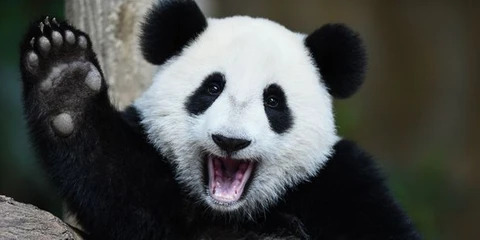

Le panda géant est une espèce de mammifères, habituellement classée dans la famille des ursidés, endémique de la Chine centrale. Il fait partie de l'ordre des Carnivores, même si son régime alimentaire est constitué à 99 % de végétaux, principalement du bambou

Le régime alimentaire du panda géant est composé presque exclusivement de bambou. Il peut en ingérer jusqu'à 38 kilogrammes par jour. L'étude conclut que tous les scénarios étudiés conduisent à une disparition graduelle des habitats des pandas dans la région, plus ou moins vite selon le rythme du réchauffement.